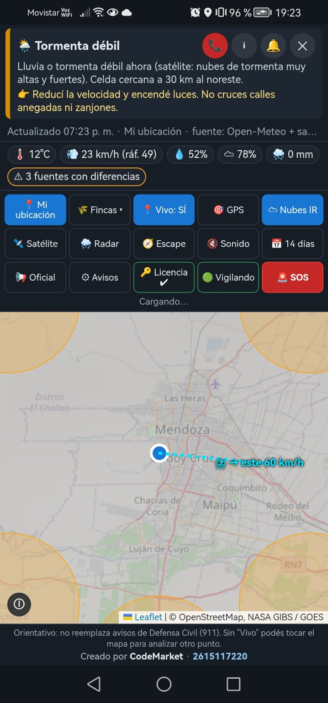
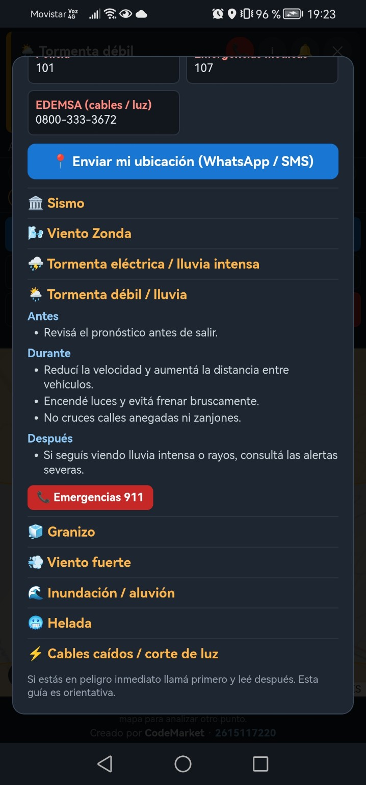

🗺️
Mapas meteorológicos
Capas de nubes, lluvia/radar, viento, temperatura, alertas y sismos.
Consultá mapas meteorológicos, pronósticos y alertas. Protegé tus fincas y ubicaciones, y anticipá las condiciones del tiempo cuando viajás por ruta.

Información y herramientas para el día a día, las fincas y los viajes. La disponibilidad de datos y alertas depende de las fuentes, la conexión y los permisos del dispositivo.
Capas de nubes, lluvia/radar, viento, temperatura, alertas y sismos.
Consultá localidades y guardá sitios de interés, como fincas, viviendas o lugares de trabajo.
Alertas configurables y vigilancia de ubicaciones guardadas, incluso en segundo plano.
Información sobre tormentas, granizo, heladas, viento, Zonda y sismos, según datos disponibles.
Indicá desde dónde salís y hacia dónde vas: TiempoMDZ traza la ruta y te informa cómo estará el tiempo en el recorrido y durante el viaje.
Recibí notificaciones de contingencias con hasta 90 minutos de anticipación, incluso con la pantalla del teléfono apagada, según la disponibilidad de datos y los permisos del dispositivo.
Consultá recomendaciones prácticas para actuar ante tormentas, granizo, viento, heladas y otras contingencias durante el recorrido.
Accesos a teléfonos de emergencia y opción para compartir tu ubicación.
Una herramienta pensada para conductores, transportistas y cualquier persona que necesite viajar con más información.
Ingresá desde dónde salís y hacia dónde vas para obtener la ruta del viaje.
Conocé las condiciones meteorológicas previstas en el trayecto y durante el viaje, no solamente en el punto de partida.
Recibí avisos antes de que una contingencia pueda afectar tu recorrido. Las notificaciones pueden llegar con la pantalla apagada, de acuerdo con los permisos y el funcionamiento del teléfono.
La aplicación ofrece orientación sobre qué hacer ante cada tipo de situación meteorológica para ayudarte a tomar precauciones.
Guardá lugares importantes y recibí vigilancia y alertas para seguir riesgos de heladas, granizo, tormentas y otras contingencias.
Accedé a la Guía SOS, teléfonos de emergencia y herramientas para compartir tu ubicación.
Comenzá con la versión que mejor se adapte a tus necesidades.
Para consultar información meteorológica y avisos esenciales.
Para quienes necesitan más herramientas de seguimiento y prevención.
Ejemplos de pantallas y herramientas disponibles.
Interfaz de TiempoMDZ.

Guía SOS y recomendaciones ante contingencias.
Instalá la aplicación en tu teléfono Android y comenzá a consultar la información meteorológica desde un solo lugar.
⬇ Descargar APKSi Android muestra una advertencia, verificá que el archivo provenga del enlace oficial de Codemarket antes de continuar.